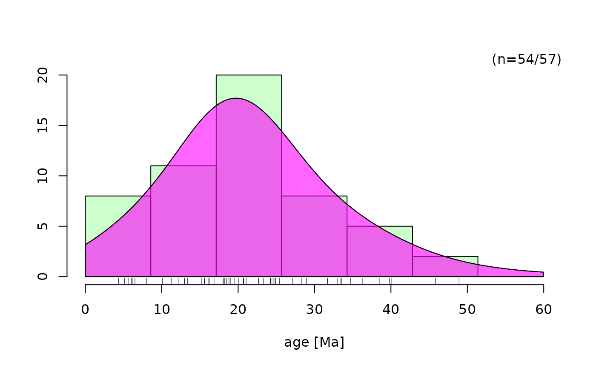
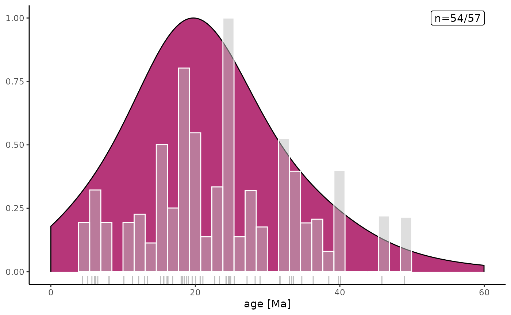

Basics
LA-ICP-MS FT single-grain age calculation using the ‘zeta’ approach:
single grain uncertainties:
The pooled age is
Session ‘zeta’ is given by
and its uncertainties are
Data import
U [U content] is given as the ratio between 238U/43Ca
based on cps (for apatite) or U/Si (zircon). Therefor, we have to rename
the columns.
library(readxl)
library(dplyr)
library(laftr)
# load the U concentrations
sample <- read_xlsx("../inst/extdata/example.xlsx", sheet = "sample") |>
rename(U = UCa, sU = sUCa)
# load the calibration measurements for zeta factor
zeta.measurements <- read_xlsx("../inst/extdata/example.xlsx", sheet = "standard") |>
rename(U = UCa, sU = sUCa)Zeta factor of the ICP-session
zeta_ICP() by giving the calibration measurements and
the used standard:
session.zeta <- zeta_ICP(zeta.measurements, spotsize = 40, mineral = "apatite", standard = "Dur")It returns a list with the original data:
## # A tibble: 6 × 6
## Grain Ns UO U sU comments
## <chr> <dbl> <lgl> <dbl> <dbl> <lgl>
## 1 DUR-1 4 NA 0.000496 0.000016 NA
## 2 DUR-2 3 NA 0.00052 0.000018 NA
## 3 DUR-3 1 NA 0.000476 0.000014 NA
## 4 DUR-4 3 NA 0.000465 0.000014 NA
## 5 DUR-5 6 NA 0.000471 0.000012 NA
## 6 DUR-6 3 NA 0.000469 0.000014 NA… the area, track densities, and the individual zetas:
## # A tibble: 6 × 2
## rhos zeta
## <dbl> <dbl>
## 1 318310. 0.0982
## 2 238732. 0.137
## 3 79577. 0.377
## 4 238732. 0.123
## 5 477465. 0.0622
## 6 238732. 0.124… and the final zeta factor (with uncertainty)
session.zeta$zeta |> as_tibble()## # A tibble: 2 × 1
## value
## <dbl>
## 1 0.118
## 2 0.0118Age calculation
age_ICP() using the just calculated zeta factor for
calibration
result <- age_ICP(sample, spotsize = 40, zeta = session.zeta$zeta)returns a list containing the original dataset:
## # A tibble: 6 × 5
## Grain Ns U sU comments
## <chr> <dbl> <dbl> <dbl> <chr>
## 1 FCT-1 7 0.000905 0.000016 NA
## 2 FCT-2 1 0.000828 0.000017 broken grain
## 3 FCT-3 2 0.000774 0.000015 NA
## 4 FCT-4 1 0.000416 0.000022 NA
## 5 FCT-5 2 0.000724 0.000019 edge
## 6 FCT-6 1 0.000122 0.000013 NA.. the individual ages:
## # A tibble: 6 × 7
## t st st.perc t.max t.min rhos zeta.error
## <dbl> <dbl> <dbl> <dbl> <dbl> <dbl> <dbl>
## 1 36.3 14.2 39.1 50.5 22.1 557042. 0.0644
## 2 5.68 5.71 101. 11.4 -0.0295 79577. 0.168
## 3 12.2 8.68 71.4 20.8 3.47 159155. 0.119
## 4 11.3 11.4 101. 22.7 -0.0720 79577. 0.168
## 5 13.0 9.28 71.5 22.3 3.71 159155. 0.119
## 6 38.5 38.9 101. 77.3 -0.408 79577. 0.169… the pooled age of the sample:
result$age.pooled## age std
## 15.212652 3.387202… and the chi-squared statistics:
result$stats## chisq probability
## 42.2710325 0.8545437Compatibility with IsoplotR
# library(IsoplotR)
data.iso <- as.fissiontracks(sample, spotsize = 40, zeta = session.zeta$zeta)
ages.iso <- as.fissiontracks(result$ages, ages = TRUE)KDE
using the functions from the IsoplotR package (P.
Vermeesch):
IsoplotR::kde(ages.iso[, 1])
or the laftr function geom_aKDE() using
adaptive KDE with ggplot2:
library(ggplot2)
data.frame(t = ages.iso[, 1], st = ages.iso[, 2]) |>
ggplot(aes(x = t, weight = t / st)) +
geom_aKDE(aes(y = after_stat(scaled)), fill = "#B63679FF") +
geom_histogram(aes(y = after_stat(ncount)), color = "white", fill = "grey", alpha = .5) + # weighted histogram
geom_rug(color = "grey") +
geom_label(x = 60, y = 1, label = paste0("n=", length(na.omit(ages.iso[, 1])), "/", length(ages.iso[, 1])), hjust = 1) +
labs(x = "age [Ma]", y = NULL) +
theme_classic()
Central Age
IsoplotR::central(ages.iso)## $df
## [1] 52
##
## $mswd
## [1] 0.7975667
##
## $p.value
## [1] 0.8545437
##
## $age
## t s[t]
## 23.968739 1.783239
##
## $disp
## w s[w]
## 6.481998e-10 3.893294e+07Peak fitting
IsoplotR::peakfit(ages.iso)## $peaks
## 1
## t 23.968739
## s[t] 1.783239
##
## $props
## 1
## p 1
## s[p] 0
##
## $L
## [1] -70.7582
##
## $legend
## expression("Peak 1:" ~ "24.0" %+-% "3.5" ~ "Ma" ~ "(prop=" *
## 100 * "%)")